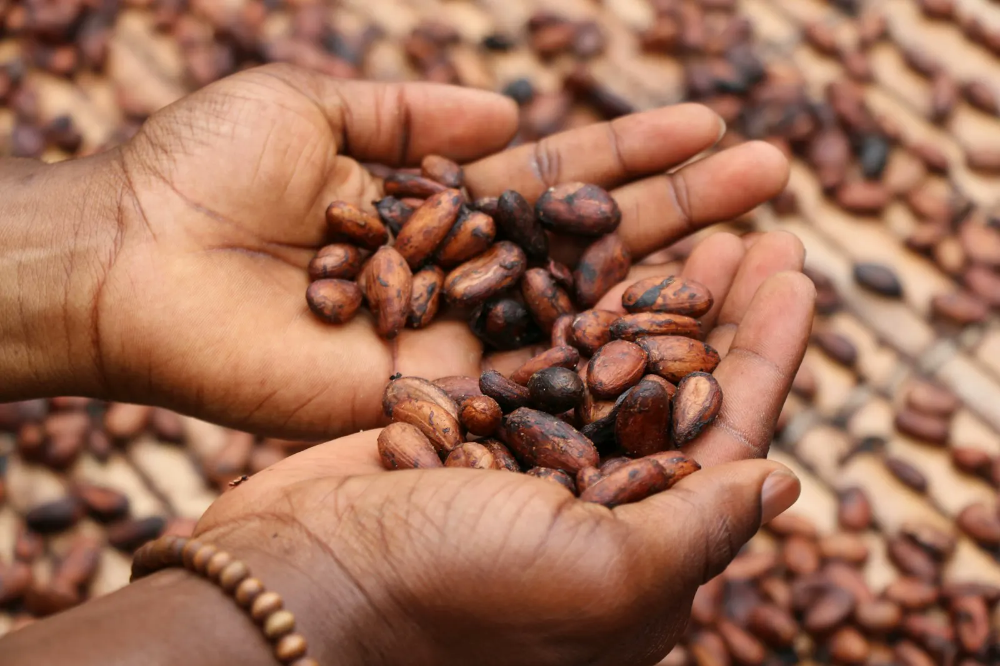

01 / 06
Négoce de matières premières agricoles
Nous sommes spécialisés dans le négoce de matières premières agricoles, offrant des solutions sur mesure pour répondre aux besoins spécifiques de nos clients. Grâce à notre réseau mondial et à notre expertise approfondie, nous garantissons des produits de haute qualité et des livraisons fiables.